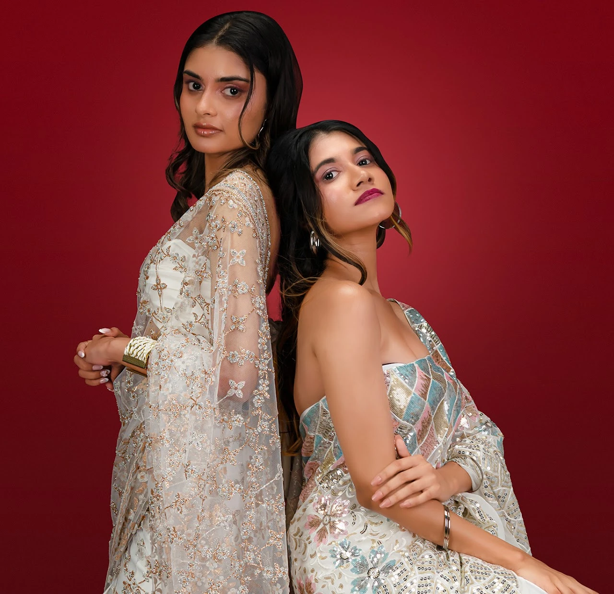

The collections
The AYĀT edit
Explore ready-to-wear pieces, made-to-order designs and couture creations. Each product clearly guides the client to purchase, consultation or private quotation.

Shop the house
Explore ready-to-wear pieces, made-to-order designs and couture creations. Each product clearly guides the client to purchase, consultation or private quotation.
